地政学
ニアメはサヘルの軍政、国境安全保障、援助外交が交差する首都です。マリ、ブルキナファソ、ナイジェリア、ベナン方面の回廊とニジェール川が、内陸国の政治と物流を支えています。緊張は街にも日々届いています。
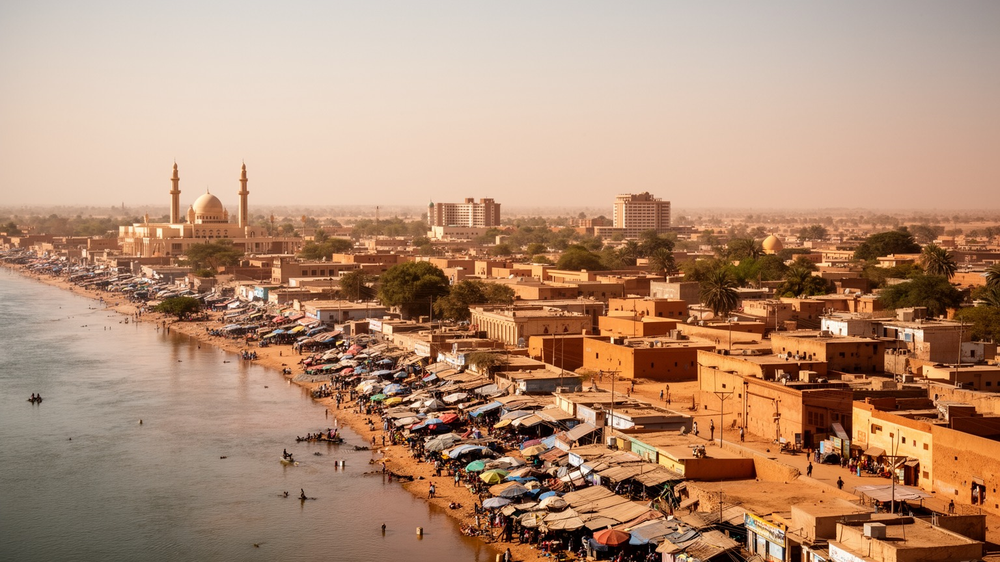
🇳🇪 ニジェール / ニアメ首都圏 / World City Atlas
サヘルの乾いた台地とニジェール川が出会う首都です。政府機関、市場、モスク、大学、移住者の地区、洪水に悩む低地、広域安全保障の緊張が、若い都市の日常に重なります。
川とサヘル
ニアメは港湾都市ではありませんが、ニジェール川、国道、空港、行政、援助機関、市場を束ねます。乾燥、洪水、治安、若い人口の仕事が、首都の課題を形作ります。
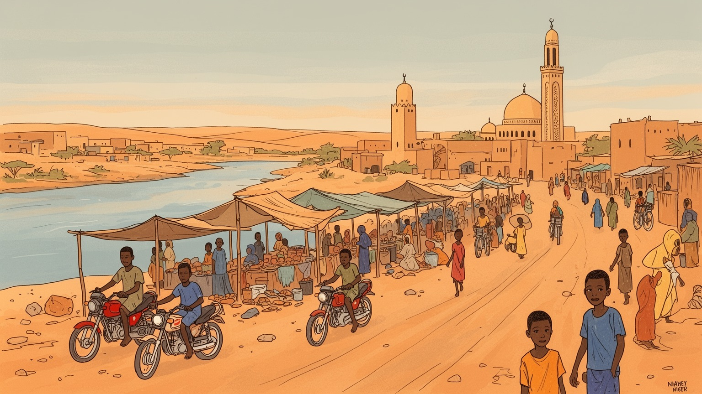
ニアメはサヘルの軍政、国境安全保障、援助外交が交差する首都です。マリ、ブルキナファソ、ナイジェリア、ベナン方面の回廊とニジェール川が、内陸国の政治と物流を支えています。緊張は街にも日々届いています。
雇用は行政、商業、輸送、建設、手工業、非公式小売、援助関連に広がります。ウランや石油は市外の資源ですが、契約、税、政策、輸入品価格は首都の市場と家計に響きます。若者の職探しも毎日の重要焦点です。今も。
ザルマ、ハウサ、フラニ、トゥアレグなど多様な人々が暮らし、イスラムの礼拝、コーラン教育、市場の会話、音楽、家族行事が街を結びます。フランス語と各地の言葉も重なります。信仰は日常を支える深い基盤です。
暮らしは暑さ、水、交通費、家賃、食品価格、洪水と向き合います。旅では大モスク、国立博物館、グラン・マルシェ、川岸の夕景を巡り、首都の静かな緊張と人の近さを感じます。市場の朝も魅力です。暑さ対策も大切です。
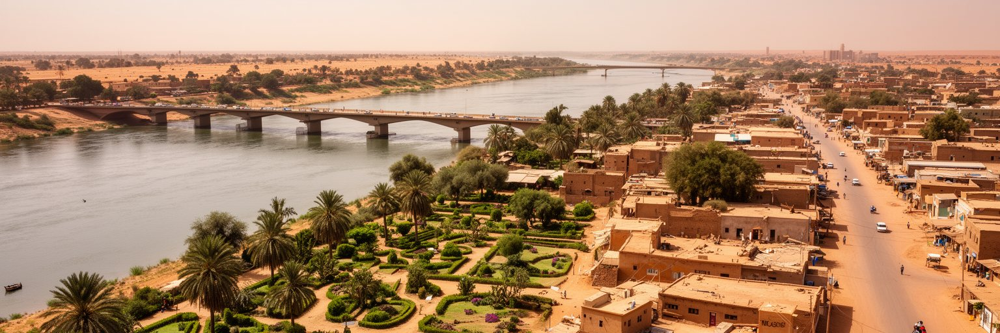
ニアメを理解する入口は、サヘルの乾いた土地に流れるニジェール川です。国土の大部分が乾燥地であるニジェールにとって、この川は飲み水、農業、漁、砂利採取、洗濯、移動、涼を求める場所をつなぐ生命線です。市街地は主に左岸に広がり、右岸の住宅地や村落とも橋で結ばれます。雨季には川と支流、排水路が増水し、低地や非公式居住地は洪水にさらされます。一方、乾季には水位低下と暑熱が生活を厳しくし、給水、農産物価格、健康に影響します。川岸には行政都市の顔だけでなく、畑、露店、家族連れ、若者、荷運び、宗教行事の動きがあります。大きな港を持たない内陸首都でありながら、川はニアメの方向感覚を作り、人々が都市を記憶する軸になります。都市化が進むほど、河川敷の開発、廃棄物、排水、洪水対策、水質保全は重要になります。川を単なる景観として扱うのではなく、暮らしと災害の両方を支える公共空間として守ることが、首都の将来を左右します。夕方の川岸に人が集まる穏やかな風景の背後には、水資源をどう分け、低地に住む人をどう守るかという政治があります。橋の整備、堤防、排水、川辺の農地利用をどう調整するかは、都市計画だけでなく貧しい世帯の安全にも直結します。川は首都の美しい輪郭であると同時に、行政の公平さを試す場所です。水辺の扱いで都市の性格が見えます。
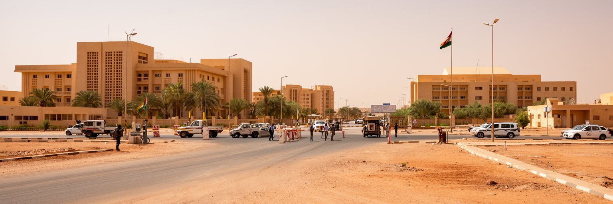
ニアメはサヘル政治の緊張を強く受ける首都です。ニジェールはマリ、ブルキナファソ、ナイジェリア、チャド、アルジェリア、リビア、ベナンと接し、武装勢力、越境商業、避難民、軍事協力、鉱物資源、移民ルートが複雑に絡みます。二〇二三年の軍事政変以後、外交関係、制裁、地域機構との距離、外国軍の扱いは大きく揺れ、首都の官庁街や大使館周辺にも政治の重さが表れました。ニアメは国民議会、省庁、軍、外国公館、援助機関、国際機関、報道が集まる場所であり、国境地帯で起きる危機を文書、会議、検問、予算、記者発表へ変換する装置でもあります。ただし、首都で決められる安全保障は、地方の農民、遊牧民、商人、避難民にとって生活そのものです。治安政策が移動の自由、家畜の放牧、市場への道、学校の開校、人道支援のアクセスを左右します。ニアメを政治都市として見る時、建物の大きさよりも、国家の判断が周縁の暮らしへどのように届くかを問う必要があります。首都の安定は、兵力だけでなく、食料、学校、医療、信頼、情報公開によって支えられます。サヘルの不安定さは遠い国境の問題にとどまらず、市場価格や家族の移動にも現れる日常の条件です。外交の窓口が首都に集まるほど、住民は国際関係の変化を燃料、送金、雇用、支援事業の形で感じます。政治は遠い制度ではなく、屋台の値段にも届く力です。
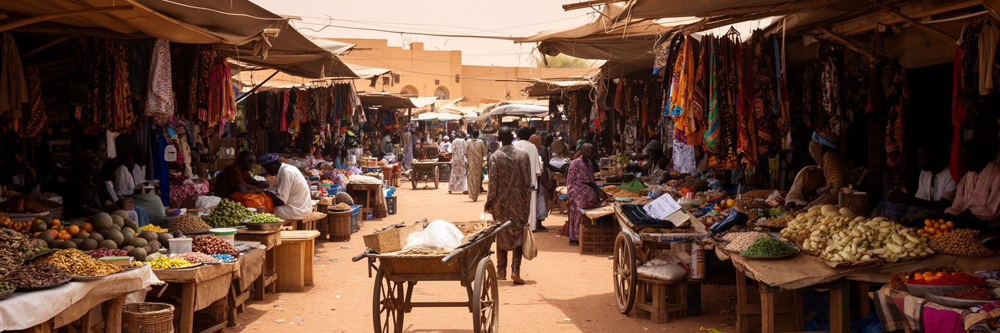
ニアメの経済を歩いて感じる場所は、官庁街よりも市場と街路です。グラン・マルシェ、地区市場、道路沿いの露店、修理屋、携帯電話の販売、仕立て、食品屋台、荷車、バイクタクシー、ミニバスが、首都の現金収入を細かく生み出します。雇用の多くは非公式で、店の場所、在庫資金、日差し、警察や自治体との関係、親族の支援に左右されます。行政や援助機関の給与は都市の消費を押し上げますが、多くの住民にとって生活は毎日の売上と食品価格にかかっています。ニジェール経済はウラン、石油、農牧業、援助、越境商業に支えられますが、資源の現場は首都から離れています。それでも契約、税制、輸入許可、燃料価格、通貨圏の制度はニアメで調整され、市場の米、油、砂糖、燃料、建材の価格に反映されます。若い人口が急増する中、学校を出た若者が十分な仕事を見つけにくいことは、家計と政治の不安を強めます。女性は小売、食品加工、家事労働、育児、親族ネットワークを通じて都市経済を支えますが、その労働は数字に表れにくいです。ニアメの市場は単なる買い物の場ではなく、地方から来た農産物、国境を越えた商品、都市の噂、宗教的な互助、若者の希望が交差する公共空間です。小さな商いは規制されやすい一方、都市を動かす柔軟な安全網でもあります。舗装、日陰、衛生、保管場所、信用へのアクセスが整えば、露店の仕事はより安定した所得へ変わります。
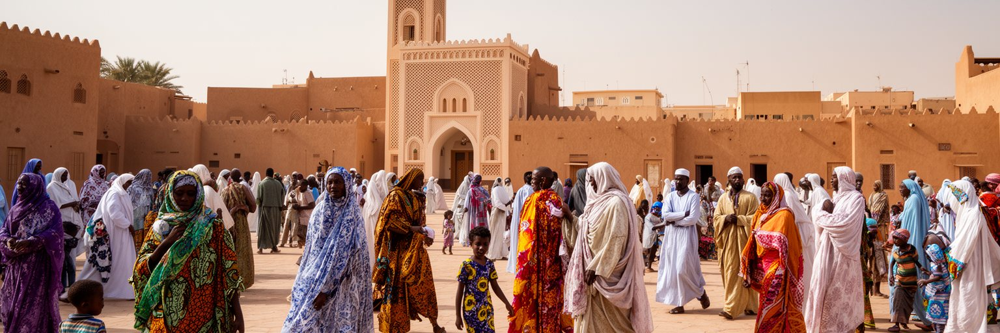
ニアメの文化は、首都である前にサヘルの多民族都市として成り立っています。ザルマ、ハウサ、フラニ、トゥアレグ、カヌリ、ソンガイ系の人々、周辺国から来た商人や労働者が、フランス語、ハウサ語、ザルマ語、アラビア語の宗教表現などを使い分けます。イスラムは日々の時間を刻み、金曜礼拝、ラマダン、犠牲祭、コーラン学校、説教、寄付、結婚、葬儀を通じて都市の人間関係を支えます。大モスクは象徴的な建物ですが、信仰の実際は近所の小さなモスク、家庭、学校、路地の挨拶にあります。スーフィー系の慣習、改革主義的な運動、若者の学び、女性の宗教活動は、都市の中で並存し、時に議論も生みます。宗教は社会的な規範と互助の基盤である一方、教育、ジェンダー、政治、貧困支援をめぐる公共的な力にもなります。音楽、布、食、語り、結婚式、近所の茶の時間には、民族や地域の違いが柔らかく混ざります。ニアメを文化都市として読むには、観光名所だけでなく、礼拝前後の人の流れ、市場の言葉、家族行事、地方から来た学生の生活を見ることが大切です。多様性は飾りではなく、急成長する首都が毎日折り合いをつける技術です。言葉の切り替えは商売の技術であり、親族や出身地のつながりは住まいと仕事を探す手がかりになります。宗教と多言語性は、都市の混雑を支える見えにくい秩序です。
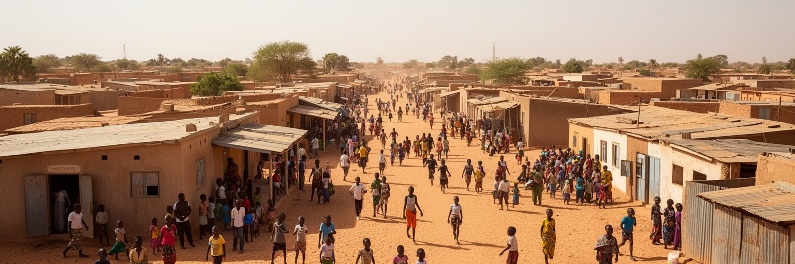
ニアメは人口増加の速い首都で、住宅地は外側へ広がり続けています。農村からの移住、出生率の高さ、学生や公務員、商人、避難してきた人々の流入が、土地とサービスへの圧力を高めます。中心部には行政、商業、比較的整った住宅が集まりますが、周辺には半公式の区画、未舗装道路、井戸や共同水栓に頼る家、電気や排水が不十分な地区もあります。土地は家族の資産であり、投機の対象であり、生活の安全でもあるため、区画整理や移転は住民に大きな不安をもたらします。若い人口は都市の力ですが、学校、職業訓練、雇用、娯楽、保健が追いつかなければ、不満や不安定さにもつながります。女子教育、早婚、失業、児童労働、路上での小商い、コーラン学校に通う子どもの生活は、都市政策と家族の選択が交わる領域です。住宅が遠くなるほど、通勤費、通学時間、診療所への距離が家計を圧迫します。ニアメの成長を単なる人口増と見るのではなく、若い住民が安全に学び、働き、移動し、暑さと洪水をしのげる都市へ変えられるかが重要です。首都の未来は、大きな道路よりも、周辺地区の水、学校、近所の市場、夜の安全に表れます。人口の若さは、教育と仕事がつながれば大きな活力になりますが、機会が不足すれば不満も増えます。住宅政策は土地の線引きだけでなく、次世代が都市に居場所を持てるかを決める政策です。
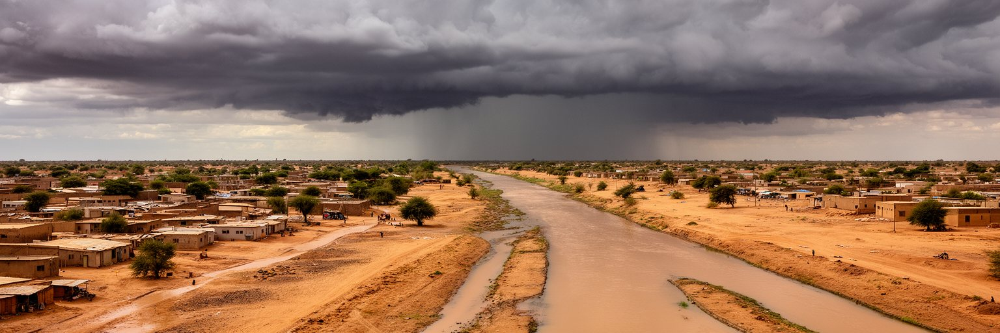
ニアメの日常は、暑さと水に強く左右されます。乾季には気温が高く、砂ぼこりを含む風、強い日射、夜間の熱、給水の不安が暮らしを疲れさせます。雨季には待ち望んだ雨が畑や気温を助ける一方、短時間の豪雨が道路を壊し、排水路をあふれさせ、低地の家屋を浸水させます。ニジェール川の増水や都市内の水はけの悪さは、貧しい地区ほど深刻な被害をもたらします。気候変動が雨の時期や強さを不安定にすれば、都市計画、住宅、保健、食料価格への影響はさらに大きくなります。暑熱は屋外労働者、露店商、運転手、建設労働者、子ども、高齢者にとって健康リスクです。水道が届かない世帯では、飲み水の購入や運搬が女性や子どもの時間を奪います。洪水後には感染症、学校の休校、家財の損失、道路の寸断が重なります。ニアメの気候対策は、堤防や大きな排水施設だけでは足りません。涼しい公共空間、木陰、舗装と浸透のバランス、早期警報、低地の土地利用、廃棄物管理、地域の避難体制が必要です。乾いた首都で水害が起きるという矛盾は、サヘル都市の難しさをよく示します。水を得ることと水から逃げることが、同じ都市の課題になっています。井戸、貯水槽、排水溝、川辺の堤は、家計と行政の能力差をはっきり見せます。気候への備えは環境政策であると同時に、貧しい地区の命を守る都市の基本です。
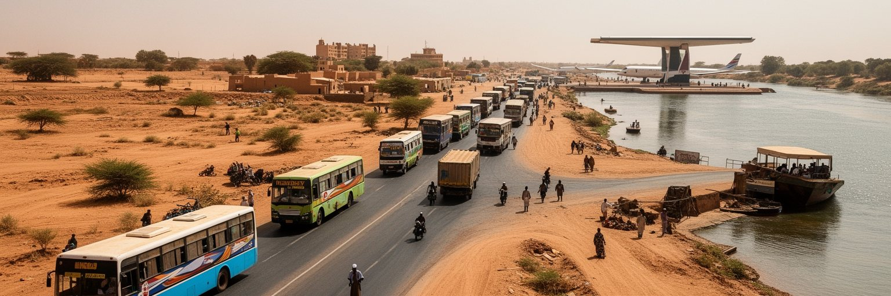
ニアメは内陸国ニジェールの移動を束ねる拠点です。ディオリ・アマニ国際空港、国道網、橋、バスターミナル、貨物車、バイクタクシーが、首都を国内各地とベナン、ナイジェリア、ブルキナファソ、マリ方面へ結びます。海港がないため、輸入品は長い陸上回廊を通って届き、港湾、国境、道路状態、燃料価格、治安、通関の遅れが都市の物価に直接響きます。市場に並ぶ米、油、建材、医薬品、機械部品は、遠い港と国境を通過した結果です。市内交通では、ミニバス、タクシー、二輪、徒歩が住民の移動を支えますが、暑さ、未舗装道路、渋滞、交通安全、橋への集中が負担になります。都市が外へ広がるほど、低所得者は仕事や学校へ行くために時間と費用を多く払うことになります。物流は安全保障とも関係します。国境地帯の不安定化や制裁、外交関係の変化は、輸入品、燃料、人道支援、農産物流通を揺らします。ニアメを交通都市として読むと、道路は単なるインフラではなく、内陸国が外部世界に接続する生命線であることが分かります。橋の上の混雑、倉庫街の荷下ろし、バスの発着、空港の警備は、国土の広さと政治の緊張を毎日の移動に変えています。交通の公平さは、首都の機会の公平さでもあります。歩道、日陰、乗り場、運賃の安定が整えば、移動は貧しい世帯の負担ではなく、学びと仕事へ届く道になります。内陸物流の強さは、近所の通学路にもつながっています。
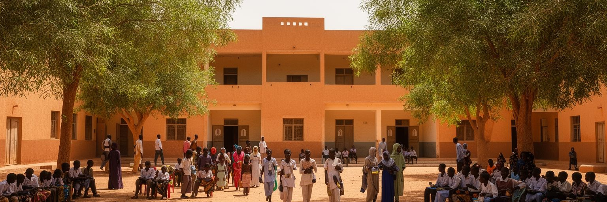
ニアメには大学、専門学校、病院、研究機関、報道機関、援助団体、国際機関が集まり、ニジェールの知識と支援の窓口になります。アブドゥ・ムムニ大学は国内各地から学生を引き寄せ、政治的な議論、就職への期待、宗教活動、若者文化の場にもなります。医療や教育の高度なサービスは首都に集中しやすく、地方から来る患者や学生にとってニアメは希望である一方、宿泊費や移動費の負担も伴います。援助機関は食料安全保障、保健、教育、難民支援、気候適応、女性と子どもの支援を扱いますが、支援が首都の事務所で完結すれば、地方の実情から距離が生まれます。市民社会、宗教団体、地域組織、女性グループ、学生団体は、政策や生活課題をつなぐ重要な役割を持ちます。ただし政治的な自由が揺らぐ時、報道や集会、批判の余地は狭くなり、都市の公共空間も緊張します。ニアメを学びと援助の都市として見るには、国際資金や大学名だけでなく、教室の混雑、奨学金、若者の職探し、病院の待ち時間、地域団体の小さな活動を見る必要があります。知識と支援が首都に集まるほど、それを地方と貧しい地区へどう届けるかが問われます。都市の知性は、専門家の会議だけでなく、住民が自分の課題を語れる場所に宿ります。学生の住まい、食費、交通、通信環境は、学びを続ける基礎条件です。援助の言葉が生活の言葉へ翻訳される時、首都の知識は初めて公共の力になります。
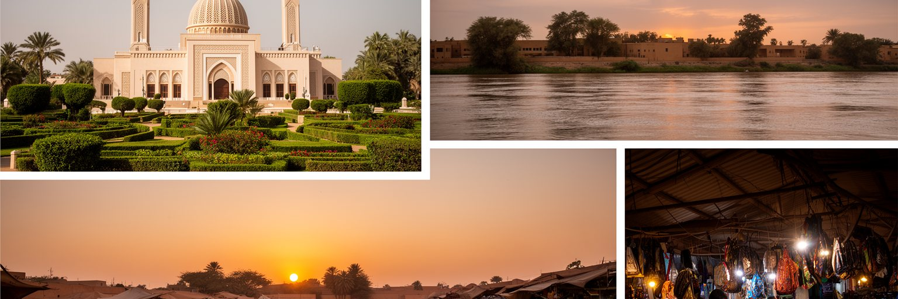
ニアメ観光は、壮大な古都を巡る旅とは違い、現在のサヘル首都を読む旅です。大モスク、ニジェール国立博物館、動物園、工芸品、グラン・マルシェ、川岸、橋、地区市場、夕方の屋台が主な入口になります。国立博物館では自然、民族、工芸、歴史を一度に見ることができ、都市が国全体を代表しようとする姿勢が分かります。市場では布、革製品、食材、金物、携帯電話、輸入品が混ざり、地方と国境を越えた商業の動きが見えます。川岸の夕景は美しいですが、そこには洪水、漁、農業、水質、都市の排水という課題も重なります。観光客は治安情報、暑さ、移動手段、写真撮影の配慮、宗教施設での礼儀を確認する必要があります。ニアメの魅力は、派手な名所の数ではなく、サヘルの政治、信仰、若い人口、川の暮らし、内陸物流を近い距離で感じられることです。ガイド、運転手、工芸家、食堂、市場の店に収入が残る形で訪れることも大切です。首都を通過点にせず、朝の市場、午後の博物館、夕方の川岸をゆっくり見ると、国の難しさと温かさが同時に見えてきます。観光は消費ではなく、都市の記憶へ静かに近づく方法になります。旅の印象は名所だけでなく、暑い道で水を買うこと、礼拝時間の街の変化を見ること、工芸品の作り手と話すことから深まります。小さな経験が首都の現実を開きます。
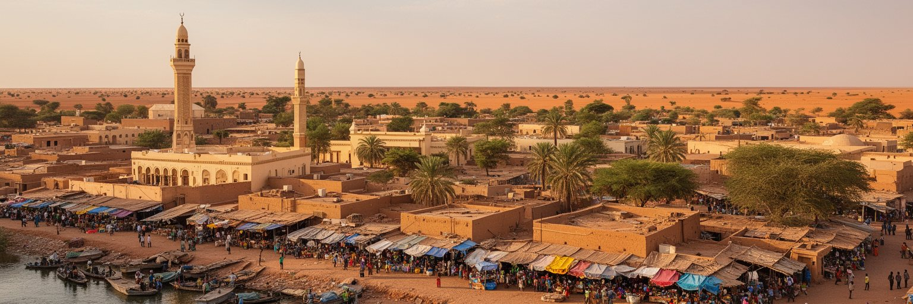
ニアメは世界の巨大金融都市ではありません。それでも世界都市の地図に置くべきなのは、サヘルの安全保障、内陸物流、気候リスク、若い人口、援助政治、イスラムの公共性、都市貧困が一つの首都に集まっているからです。経済規模だけを見れば小さくても、ここで決まる政策は国境地帯の村、避難民、農牧民、市場商人、学生、援助現場に影響します。ニジェール川の水、雨季の洪水、乾季の暑さ、輸入品の長い道のり、軍政下の外交、若者の仕事探しは、二十一世紀の都市が直面する課題を濃く映します。ニアメの街路には、整った官庁街と砂ぼこりの路地、宗教的な秩序と若者の不安、国際機関の車と露店の小商いが同時に存在します。この重なりを読むことで、都市の重要性を人口やGDPだけで測れないことが分かります。首都の価値は、国家を代表する建物だけでなく、暑い午後に水を得られるか、洪水時に避難できるか、学校と仕事に届くか、違う背景の人が同じ市場で暮らせるかで測られます。ニアメは、サヘルの困難を背負いながらも、川岸の生活力と若い人口のエネルギーを持つ都市です。その複雑さこそが、世界を読むための重要な手がかりになります。都市の静かな強さは、危機の中でも市場を開き、祈り、学び、家族を支える人々の反復にあります。ニアメを読むことは、脆さと持続力を同じ視線で見ることです。